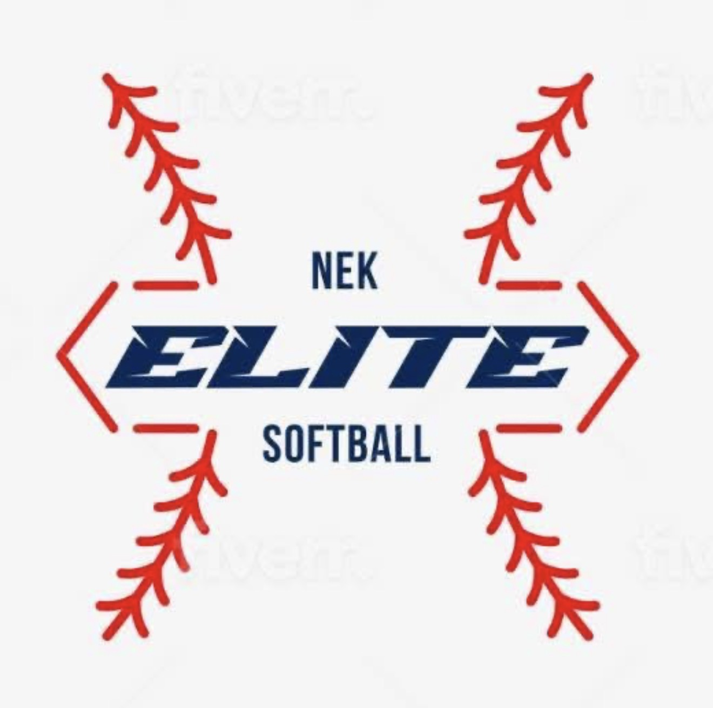

Who We Are
About
NEK Elite Softball
Development. Repetitions. Opportunity.
NEK Elite is a Northeast Kansas youth softball organization committed to developing athletes through quality coaching, meaningful repetitions, competitive opportunities and a team-first environment.
Our 2027 organization includes 8U, 10U and 12U teams.